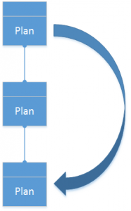

Datenzuteilung für Budgetplanung
Important
Dynamics 365 for Finance and Operations hat sich zu speziell entwickelten Anwendungen entwickelt, mit denen Sie bestimmte Geschäftsfunktionen verwalten können. Weitere Informationen zu diesen Änderungen finden Sie im Dynamics 365-Lizenzierungshandbuch.
Dieses Thema beschreibt die verschiedenen Zuordnungsmethoden, die in Microsoft Dynamics 365 Finance verfügbar sind, und wie sie verwendet werden können.
Sie können die Daten in einem Budgetplan auf vielfältige Weise verteilen, um die geplanten Beträge genau zu darzustellen.
Zuweisungsmethoden
Drei Zuordnungsmethoden (Auf Perioden verteilen, Zu Dimensionen zuordnen und Sachkonto-Zuordnungsregeln verwenden) können Budgetplanpositionen erstellen, die auf den Positionen im gleichen Budgetplan basieren. Drei andere Methoden (Zusammenführen, Verteilen und Aus Budgetplan kopieren), können Budgetplanpositionen in anderen Budgetplänen erstellen. Für alle sechs Zuordnungsmethoden geben Sie das Zielszenario an. Das Zielszenario kann entweder dem Quellszenario gleichen oder sich davon sich unterscheiden. Darüber hinaus können Sie angeben, ob dem Haushaltsplan neue Positionen angehängt oder die aktuellen Positionen im Budgetplan ersetzt werden.
Note
Für die Aggregation sollte ein eindeutiges Szenario verwendet werden, das sich von dem Szenario unterscheidet, das für den Vertrieb oder andere Änderungen, die zuvor im übergeordneten Plan durchgeführt wurden, verwendet wurde.
Auf Perioden verteilen – Eine Pertiodenzuteilungskategorie wird verwendet, um die Budgetplanpositionen von den Quellbudgetplanszenarioperioden im Zielszenario zuzuteilen. Der Quellbetrag wird mehreren Positionen im Zielszenario basierend auf dem Prozentsatz und dem Datum zugewiesen, die in der Periodenzuteilungskategorie definiert werden.
{kind=link}
 Zu Dimensionen zuordnen – Die Budgetplanpositionen werden vom Quellbudgetplanungsszenario an einen oder mehrere Positionen im Zielszenario auf Grundlage der Prozentsätze und der Finanzdimensionen zugeordnet, die in einer ausgewählten Bedingung für Budgetzuteilung definiert werden.
Zu Dimensionen zuordnen – Die Budgetplanpositionen werden vom Quellbudgetplanungsszenario an einen oder mehrere Positionen im Zielszenario auf Grundlage der Prozentsätze und der Finanzdimensionen zugeordnet, die in einer ausgewählten Bedingung für Budgetzuteilung definiert werden.
Zusammenführen – Die Budgetplanpositionen werden aus dem Quellbudgetplanszenario in zugeordneten (untergeordneten) Budgetplänen auf das Zielszenario in den übergeordneten Budgetplan verteilt. Diese Methode erlaubt Budgetbeträge, die auf einer niedrigeren Ebene in der Organisation vorbereitet werden, auf einer höheren Ebene zu konsolidierenden.
 Verteilen – Die Budgetplanpositionen werden vom Quellbudgetplanungsszenario im übergeordneten Budgetplan dem Zielszenario in den zugehörigen (untergeordneten)Budgetplänen auf Grundlage die Finanzdimensionen der Organisationseinheiten der zugeordneten Pläne verteilt. Diese Methode erlaubt Budgetbeträge, die auf einer höheren Ebene in der Organisation vorbereitet werden, für eine örtlichere Überprüfung auszubreiten.
Verteilen – Die Budgetplanpositionen werden vom Quellbudgetplanungsszenario im übergeordneten Budgetplan dem Zielszenario in den zugehörigen (untergeordneten)Budgetplänen auf Grundlage die Finanzdimensionen der Organisationseinheiten der zugeordneten Pläne verteilt. Diese Methode erlaubt Budgetbeträge, die auf einer höheren Ebene in der Organisation vorbereitet werden, für eine örtlichere Überprüfung auszubreiten.
Sachkonto-Zuordnungsregeln verwenden – Die Budgetplanpositionen werden vom Quellbudgetplanungsszenario auf Grundlage der ausgewählten Sachkonto-Zuordnungsregel auf das Zielbudgetplanszenario verteilt.
{kind=link}
 Aus Budgetplan kopieren – Wie bei der Verteilungszuordnungsmethode, Budgetplanpositionen werden im Ziel, auf Grundlage der Positionen in einem dazugehörigen Budgetplan erstellt. Für diese Methode muss der Quellbudgetplan nicht der übergeordnete Plan sein, kann jedoch auf jeder höheren Ebene in der Budgetplanhierarchie stehen. Diese Zuordnungsmethode ist hilfreich, wenn konsolidierte Beträge ursprünglich auf einer viel höheren Ebene geplant werden, und muss einer untergeordneten Ebene der Organisation für detaillierten Prüfung und Regulierung übertragen werden, bevor sie höhere Genehmigung erhalten können.
{kind=link}
Verwenden der Zuordnungsmethoden in einem Budgetplan
Um Zuweisungen auf der Budgetplanseite auszuführen, wählen Sie die zuzuweisenden Positionen aus, und klicken Sie anschließend auf Budget zuteilen.
{kind=link}
Wählen Sie anschließend eine Zuordnungsmethode aus. Die übrigen Felder werden dann auf Grundlage der Methode festgelegt, die Sie ausgewählt haben. Diese Felder enthalten die Quelle und das Ziel der Budgetplandaten und eine Option, mit der Sie die Quelle durch einen angegebenen Faktor multiplizieren können, wenn die Zielbeträge erstellt werden, um die Massenregulierung zu vereinfachen. Sie können auch die Option An Plan anheften festlegen. Wählen Sie Nein aus, um die vorhandenen Budgetplanpositionen zu ersetzen, oder Ja, um die vorhandenen Budgetplanpositionen zu verwalten und neue Positionen für die zugeteilten Beträge hinzuzufügen.
Automatisieren von Zuweisungen während eines Workflows
Eine leistungsfähige Funktion ermöglicht es Zuweisungen als Teil eines Budgetplanungsworkflows automatisch ausführen zu lassen. Während ein Budgetplan den Workflow durchläuft, können automatisierte Aufgaben eine Zuteilung in einem angegebenen Budgetplanungsstadium aufrufen.
Um die automatisierte Zuweisung einrichten, müssen Sie auf der Seite Budgetplanungskonfiguration zunächst einen Zuteilungszeitplan erstellen. Der Zuteilungszeitplan definiert die Zuteilungsmethode, die verwendet wird, wenn die automatisierte Zuteilung ausgeführt wird, und die Werte der verschiedenen Zuteilungsoptionen (Informationen dazu finden Sie im vorherigen Abschnitt zu Beschreibungen).
Anschließend erstellen Sie eine Phasenzuteilung auf der Seite Budgetplanungskonfiguration. Die Phasenzuteilung weist einen Zuteilungsplan dem Budgetplanungsworkflow und der -phase zu.
Schließlich fügen Sie in dem gewünschten Workflowstadium eine automatisierte Aufgabe für Budgetplanungsphasenzuteilung hinzu. Im folgenden Beispiel wurden zwei Budgetplanungsphasenzuteilungen (in rot umrissen) in den Workflow eingefügt.
{kind=link}